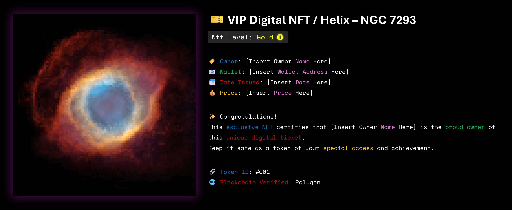

NFT: Nebula Helix / NGC 7293
"In the heart of the cosmos, where stars meet their end and from their ashes new beauty is born, the Helix Nebula (NGC 7293) has taken shape."
One of the brightest and closest planetary nebulae to Earth, located at an approximate distance of 650 light-years in the constellation Aquarius.
This nebula, due to its appearance resembling a cosmic eye shining in the darkness of space, is known as the 'Eye of God'.
Its vastness extends over 2.5 light-years — meaning that light, traveling at a speed of 300,000 kilometers per second, takes more than two years to cross from one side to the other.
Download link for the colors used (TXT file): Download
Collection link on OpenSea: Click to open
- Details of the phenomenon
"Far beyond a mere digital image, this NFT stands as an artistic rebirth of a cosmic marvel."
- The creation process of the piece took over five months.
- The piece was created with a resolution of 100×100 pixels, totaling 10,000 pixels.
- Approximately 4,800 distinct colors were meticulously selected from the original photograph during the design process.
- Blockchain
- This NFT has been recorded on the Polygon blockchain.
- This piece has been created following the ERC-721 standard.
- Ownership and the history of its transfers are stored transparently and immutably on the blockchain.
- The human aspect
- A portion of the proceeds from the sale of this NFT will be dedicated to helping those in need and creating joyful moments for people.
- Purchasing this piece is not only the ownership of a work of art but also participation in a humanitarian initiative.
- Special privileges reserved for the buyer
- Receive a special digital ownership card, exclusively belonging to the holder of the piece.
- A 20% discount on the purchase of the next NFT from the same collection.
- A piece with high potential for artistic and collectible value appreciation over time.
"NFT: Nebula Helix is a journey from the stars to the blockchain—a bridge between science, art, and technology.
By owning this piece, you are not merely possessing an image; you hold an eye that shines in the endless darkness of the universe."
Digital Card Preview

Email: